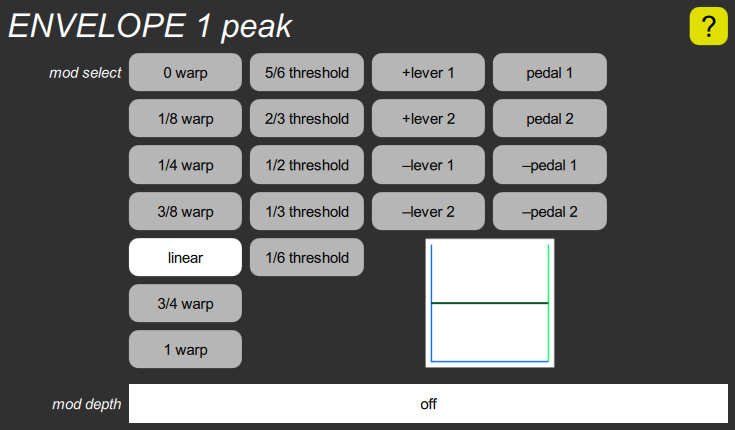

ENVELOPE peak cluster

This sets how the peak amplitude of the envelope is affected by either velocity, a lever position, or a pedal position. The mod select parameter determines what controls the peak amplitude, and for velocity, what the shape of the response curve is. The mod depth slider determines how much the peak can vary. The small box contains a graph that shows the relationship of the velocity or other input value and the resulting peak. If the range is turned off, the peak is always one unit. If the range is turned up, the peak can vary from zero to two units for the first seven selections, zero to one for the rest.